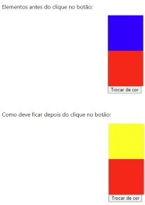

Descrição da tarefa: Você deve criar 2 quadrados na tela usando HTML e CSS. O primeiro quadrado deve ter a cor de fundo azul e o segundo a cor de fundo vermelha. Além disso você deve adicionar um botão na tela com a label “Trocar de cor” e ao clicar no botão somente o quadrado azul deve ter sua cor alterada para amarelo. Lembrando que essas classes devem ser criadas previamente no CSS.
